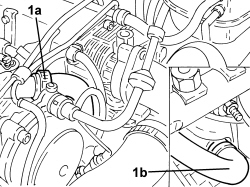

1080D20 OIL VAPOUR PIPE FROM TAPPET COVER TO ENGINE BLOCK - R.R
- Path
- Procedures > 10 ENGINE > 1080 EMISSION CONTROL SYSTEM > 1080D CRANKCASE VAPOUR/GAS RECIRCULATION SYSTEM > 1080D20 OIL VAPOUR PIPE FROM TAPPET COVER TO ENGINE BLOCK - R.R
- Kind
- repair procedure (removal / refitting; the operation number is the code)
- Applies to
- engines: 1.9 JTD 8v; all production periods
- Interactive page
- https://sloeber94.github.io/elrnDB-fCrm/en/#/194002195
Applies to: engines: 1.9 JTD 8v; all production periods
 Removing
Removing
 Refitting
RefittingOp. 1016A10 SOUND-PROOFING COVER - R.R
1. Loosen the bands (1a) and remove the oil vapour pipe from the tappet cover to the engine crankcase (1b).

Applies to: engines: 1.9 JTD 8v; all production periods
Refitting
Removing- Place the oil vapour pipe from the tappet cover to the engine crankcase back in its housing and secure it using the bands.